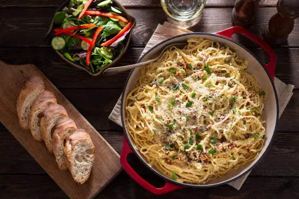

Pasta Carbonara
Here's a step-by-step recipe for making classic pasta carbonara:
Ingredients:
Spaghetti: 400 grams (or another long pasta like linguine or bucatini)
Pancetta or guanciale: 150 grams, cut into small cubes
Eggs: 4 large (use 3 whole eggs and 1 yolk)
Parmesan cheese: 100 grams, grated (or Pecorino Romano for a more traditional touch)
Garlic: 1 clove, optional
Black pepper: Freshly ground
Salt: For the pasta water
Step-by-Step Instructions:
1. Boil the Pasta:
Bring a large pot of salted water to a boil. Add the spaghetti and cook until al dente according to the package instructions. Reserve about 1 cup of the pasta cooking water before draining.
2. Prepare the Sauce Mixture:
In a mixing bowl, combine the grated Parmesan cheese with the eggs. Beat until smooth and set aside.
3. Cook the Pancetta or Guanciale:
In a large skillet or frying pan, cook the pancetta or guanciale over medium heat. If desired, add a clove of crushed garlic for extra flavor and remove it once it becomes golden.
Cook until the meat is crispy and the fat has rendered out. Remove from heat to prevent it from burning.
4. Combine Pasta and Pancetta:
Add the drained spaghetti directly to the skillet with the pancetta. Toss until well-coated in the rendered fat.
5. Add the Egg Mixture:
Remove the skillet from the heat (to prevent scrambling the eggs) and pour in the egg and cheese mixture. Quickly toss the pasta, adding a bit of reserved pasta water as needed to create a creamy sauce. The heat from the pasta will cook the eggs gently.
6. Season and Serve:
Add plenty of freshly ground black pepper and toss again. Taste and adjust with more cheese or pepper if desired.
Serve immediately, garnished with additional grated Parmesan and black pepper.
Enjoy your delicious homemade pasta carbonara!